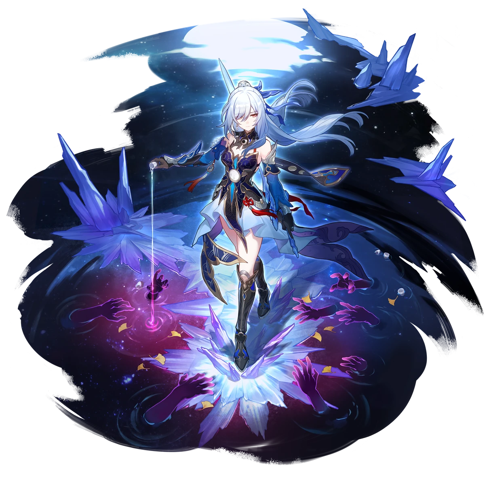
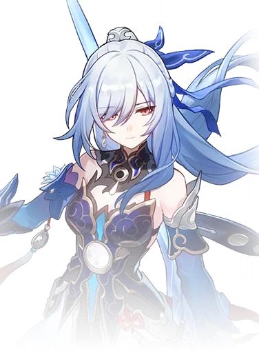

Descripcion del personaje
Jingliu es un personaje importante en Honkai: Star Rail, conocido por ser una ex-General de la Alianza Xianzhou y una de las figuras más legendarias de la flota Xianzhou Luofu. En el pasado, Jingliu fue maestra de Jing Yuan, el actual General, y era famosa por su destreza en la batalla y su liderazgo militar. Sin embargo, su historia toma un giro oscuro cuando se ve corrompida por el poder del Abundancia, una fuerza peligrosa y tentadora en el universo del juego.
Como resultado de esta corrupción, Jingliu fue consumida por la maniobra de la desviación, lo que la llevó a perder el control y eventualmente ser destituida de su cargo de General. Después de esto, Jingliu desapareció, cayendo en desgracia y transformándose en un caminante solitario. A pesar de su trágico destino, sigue siendo una poderosa y temida figura, vagando con habilidades inmensas y un aura de misterio y melancolía.
Jingliu es un personaje de gran relevancia en la narrativa de la Xianzhou y su conexión con Jing Yuan agrega un nivel emocional a su historia. Aunque su presencia está marcada por la tragedia, su habilidad en combate y su legado como una antigua general la convierten en una figura crucial para entender la historia de la flota.
Introduccion al personaje
Jingliu es un personaje jugable en Honkai: Star Rail, de tipo Hielo y perteneciente a la Vía de la Destrucción. En combate, se destaca por su capacidad de infligir grandes cantidades de daño y su mecánica única de "Transcendencia", que le permite consumir vida (HP) para potenciar sus ataques en lugar de usar energía.
Su estilo de juego combina ataques masivos y control del campo de batalla, con habilidades que pueden congelar enemigos y causar daño en área. Este enfoque arriesgado la convierte en una poderosa luchadora que puede generar explosiones de daño a costa de su propia salud, ideal para jugadores que prefieren un combate ofensivo y estratégico.

Calidad del personaje

VIA del personaje
Destruccion

Estadisticas del personaje
- PV: 1436
- ATQ: 679
- DEF: 485
- VEL: 96
- Provocacion: 125